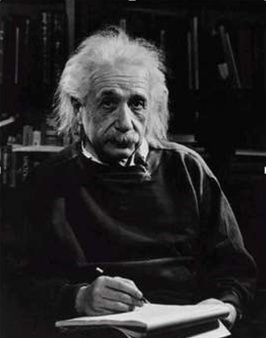
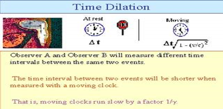

Theory
Principle:
There are two theories of relativity discovered by Einstein in 1905, one is called the Special Theory of Relativity and the other the General Theory of Relativity. Here we are focussing Special theory of relativity. The special means that it is restricted to objects moving with a uniform velocity in a straight line. The entire theory of time dilation based on Einstein’s postulates of special theory of relativity. There are two postulates:a) Principle of relativity: All the laws of Physics are same in all Inertial frame of references.
b) Principle of constancy of speed of light: The velocity of light is constant (3×108 m/sec) in all Inertial frame of references.

Theory of Time Dilation:
A lot of effort to visualize Special Relativity using graphical computerize simulation have been done throughout Ref. [1-7] recent years. Time Dilation theory was proposed by Albert Einstein in his publication on Special Theory of Relativity Ref. [8]. Time Dilation theory indicates that time move slower when travelling near the speed of light. This phenomenon happens because the speed of light is defined as constant and because of this, time and space must change in order to become relative with the light’s speed (relativity environment). The changing nature of space relative to light’s speed is defined by Lorentz Transformation [9].Proper Time (t):
Proper time is defined as elapsed time between two relativistic events as measured by a clock that passes through both events (same clock). It is denoted by a symbol t.Relative Velocity (v):
In classical mechanics, velocity is defined as the rate of change of position (displacement in certain direction) with respect to time. It is also known that speed is the magnitude of velocity and in relativistic environment where speed can be equal to the speed of light.Improper Time or Dilated Time (t'):
Improper time is defined as the time between two relativistic events as measured by a clock at rest relative to another clock.Derivation of Time Dilation:
Let us consider two frames of references and , the moving with a velocity relative to the along the positive direction. Suppose that a clock is placed in the frame . If be the time of occurrence of two events measured by a clock in frame and be the corresponding time interval, then we have
$$t=t_2-t_1$$
If be the time of occurrence of the same events measured by another clock placed in the stationary frame and be the corresponding time interval, then we can write
$$t^\prime=t_2^\prime-t_1^\prime$$
Using the Lorentz transformation equation, we have
$$t^\prime=\frac{t-\frac{vx}{c^2}}{\sqrt{(1-\frac{v^2}{c^2})}}$$
Similarly we can construct for(t1', t2')
$$t_1^\prime=\frac{t-\frac{vx}{c^2}}{\sqrt{(1-\frac{v^2}{c^2})}}$$ and $$t_2^\prime=\frac{t-\frac{vx}{c^2}}{\sqrt{(1-\frac{v^2}{c^2})}}$$& Now eq. becomes
$$t^\prime=\frac{t_1-\frac{vx}{c^2}-t_2+\frac{vx}{c^2}}{\sqrt{(1-\frac{v^2}{c^2})}}$$
Then,
$$t^\prime=\frac{t_1 - t_2}{\sqrt{(1-\frac{v^2}{c^2})}}$$
Using eq., we obtain,
$$t^\prime=\frac{t}{\sqrt{(1-\frac{v^2}{c^2})}}$$
if v>c, the clock will be completely stopped, since t becomes infinity.
Since$$\sqrt{1-\frac{v^2}{c^2}}\lt1$$the above expression shows that $$t^\prime\gt t$$ Thus a clock moving with relativistic velocity $$v\approx c$$ appears slow to a stationary observer. Exactly at $$v=c$$ the clock will be completely stopped.